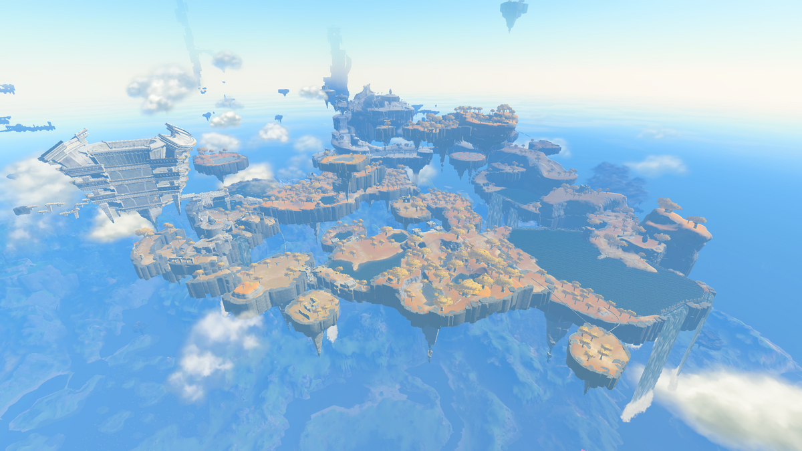

图：游戏实机截图——林克张开滑翔伞，从高空俯瞰海拉鲁，远处是天空岛（图片来源：Zelda Wiki，本站自托管图片）。
先说结论：滑翔伞是全游戏最常用的移动工具
拿到滑翔伞之后，它就是你全程用得最多的移动工具：下山、赶路、进神庙、追呀哈哈、从鸟望塔出发，全靠它。飞得远不远看三件事：起飞高度、精力圈数、会不会借上升气流。精力不是越多越好——会用俯冲和气流，一圈精力也能飞很远；不会用，三圈精力照样飞不出一个山头。
怎么拿到滑翔伞：主线走到瞭望台着陆点
滑翔伞是主线给的，流程很短：从初始之岛下来，跟着主线标记走到瞭望台着陆点，见普尔亚；她让你去海拉鲁城堡找霍兹队长（主线“海拉鲁城堡危机”）；见完霍兹回来找普尔亚，她带你去瞭望台着陆点的鸟望塔，讲解一遍鸟望塔的用法，然后把滑翔伞交给你。之后第一次用鸟望塔弹射上天，落地后再找普尔亚对话，主线就推进到四地区异变。
理论上可以跳过主线不拿滑翔伞直接玩，但没滑翔伞从高处下来只能摔死或者绕路，得不偿失。落地之后第一件事就是去瞭望台着陆点拿滑翔伞，别急着爬雪山或者往神庙钻。
基础操作：张开、收起、转向与精力
- 张开与收起：空中按 X 张开滑翔伞，再按一次 X 收起。左摇杆控制方向，前推是加速下降，后拉是减速抬头，左右是转向。
- 滑翔消耗精力：滑翔全程都在消耗精力，精力耗尽会自动收伞坠落。精力圈开局一圈，祝福之光 4 个换 1 个精力容器，最多攒到三圈。
- 滑翔中可以吃东西：滑翔中随时可以打开菜单吃精力料理回精力，赶路前备几份精力蘑菇做的料理，比硬攒精力圈更实用。
- 落地免摔伤：高处落地前张开滑翔伞，可以免掉摔落伤害；没开伞从高处掉下来是会摔死的，跳之前先确认伞在手里。
省精力的核心技巧：俯冲与滑翔交替
俯冲（按住 R）不耗精力，滑翔才耗，这是全篇最重要的一条规则。长途飞行的正确姿势是：从高处起跳先俯冲攒速度、冲方向，接近目标时再张开滑翔伞调整落点；需要转向时张开滑翔伞转，调好了再收伞继续俯冲。全程开伞直线飞是最费精力的飞法，也是最慢的飞法。
精力不够又必须飞远的时候，别直线硬飞：找中途的落脚点回精力——天空岛、山顶、神庙顶都可以落，落下站稳，精力回满再飞。滑翔套装（下面细说）能大幅减少滑翔伞的精力消耗，穿齐三件再飞长途，精力压力小一半。
上升气流：火堆、风扇、火箭、间歇泉与图林的风
上升气流是滑翔伞的免费燃料，来源有五种，记住它们，赶路就不用处处找高处起跳：
- 篝火和火堆：点一堆火，站在火上方的热气流里张开滑翔伞，能被托着往上飘。这是最便宜的上升气流，随身带打火石和木柴，走到哪点到哪。
- 左纳乌风扇：风扇吹出的气流能把人托起来，站在风扇的气流里张开滑翔伞就能升空，造飞行器时顺手利用。
- 火箭：火箭直接把人送上天，爆发力最强，适合从低处快速爬升；缺点是持续时间短，升到顶立刻张开滑翔伞接住。
- 间歇泉：埃尔丁火山一带的间歇泉喷发时，站在气柱里能被冲上高空，再张开滑翔伞飞走。
- 图林的风：打完风之神殿后，风之贤者图林的突风能在滑翔中把你向前冲一段，赶路和追目标都好用。
鸟望塔弹射起飞：从高处出发飞得最远
15 座鸟望塔全开之后，任意两点之间基本靠飞：开塔被弹到高空，空中张开滑翔伞，配合俯冲能横跨大半个地图。弹射后别急着开伞，先俯冲对准方向，飞到目标上方再开伞；精力不够就中途落到山顶、神庙顶回精力。

图：游戏实机截图——瞭望台着陆点的鸟望塔，弹射起飞是滑翔伞最好的起点（图片来源：Zelda Wiki，本站自托管图片）。
鸟望塔本身也是滑翔伞的练习场：开一座塔就飞一次，练几次俯冲加滑翔的交替，精力管理自然就熟了。塔开得越多，可选的起飞点越多，赶路越不用绕路。
滑翔套装：三座跳伞仪式岛
滑翔套装一共三件，每件防御 2，效果是提升跳伞机动性、大幅减少滑翔伞的精力消耗。三件分别在三座环形天空岛上，找岛上的管理员魔像参加跳伞仪式：先免费试跳一次，试跳成功解锁岛上的神庙；再交 1 个左纳乌能源结晶正式挑战，35 秒内穿过全部绿色圆环，落到岛底的水池，拿到对应部件。
| 部件 | 岛屿 | 最近的鸟望塔 | 怎么过去 |
|---|---|---|---|
| 滑翔服 | 勇气之岛 | 林德尔眉鸟望塔（-1901, 1243, 0297） | 弹射后向西南滑翔，环形岛群很好认 |
| 滑翔紧身裤 | 勇猛之岛 | 提弗洛遗迹鸟望塔（0343, 3133, 0180） | 弹射后向南飞，中途大岛有飞行器零件，可以造机过去 |
| 滑翔面具 | 英勇之岛 | 拉聂尔山鸟望塔（3846, -1307, 0539） | 弹射后向东北滑翔，岛在雾里，认准环形岛群 |
挑战技巧就一条：全程按住 R 俯冲，只在需要对准圆环时松开 R、张开滑翔伞微调。别全程开伞，35 秒很紧，开伞减速会超时。多带几个左纳乌能源结晶，失败一次就交一个重来。顺序建议先拿勇气之岛的滑翔服——最近、最容易；再拿勇猛之岛的紧身裤；最后拿英勇之岛的面具。拿到一件就穿上，后面两座岛的挑战会容易一些。

图：游戏实机截图——初始之岛上空，滑翔伞是往返天空岛最省事的交通工具（图片来源：Zelda Wiki，本站自托管图片）。
强化与套装奖励：升到 2 星免摔伤
找大妖精强化滑翔套装：1 星每件需要 3 个基斯之翼加 10 卢比；三件全升满总共需要 24 个基斯之翼、42 个气流蝠眼球、48 个气流蝠之翼、36 个古栗欧克之翼、24 个吉波多之翼和 2280 卢比。三件都升到 2 星，穿齐获得“防摔”套装奖励——从任何高度掉下来都不掉血，跳伞、滑翔、爬高再也不用算落点。
空中射箭：子弹时间怎么用
下落或者滑翔中拉弓，时间会变慢（子弹时间），代价是精力掉得飞快。它的用途是打空中目标：方块魔像的核心、吉波多的眼睛、高处的敌人，配上基斯之眼做的追踪箭，基本指哪打哪。子弹时间别贪——精力见底会直接收伞坠落，留半圈精力保底，打完立刻松开弓。
左纳乌之翼：滑翔伞的搭档
左纳乌之翼是滑翔伞之外的飞行工具：放上滑轨起飞，站在翼上靠站位控制方向——站中间直飞、站前面俯冲加速、站后面抬头爬升、站左右转弯。飞行时限 1 分钟，快到时限翼会闪绿光提示，超时直接消散——算好距离，极限前跳伞接滑翔伞。加装风扇提速、火箭爆发加速、操纵杆精准控制；自动建造可以一键复刻常用的三风扇飞翼。翼和滑翔伞接力用：翼飞到极限前跳下来张开滑翔伞，等于多飞一段。
翻车点：三件容易翻车的事
第一，精力耗尽坠落。滑翔中精力一空直接收伞，摔死不商量——长途飞行前吃满精力料理，留半圈保底，别把精力用到最后一格。
第二，雷暴天飞高。雷暴天气金属装备会引雷，飞在天上目标更大——雷暴来了先落地，等天晴再飞，别顶着雷暴赶路。
第三，跳伞仪式贪开伞。35 秒挑战里全程开伞必超时——俯冲赶路、只在对准圆环时开伞微调，记住这一点，三座岛一次过。
一句话总结
先去瞭望台着陆点拿滑翔伞，赶路用俯冲省精力、开伞调方向，火堆风扇火箭间歇泉都能借上升气流，15 座鸟望塔弹射出发飞最远，滑翔套装三座岛 35 秒跳伞仪式拿齐、升到 2 星免摔伤，空中拉弓是子弹时间但别贪——留半圈精力保底。